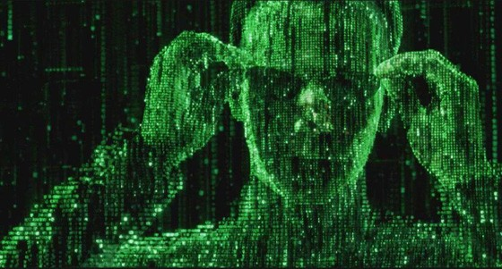

The Matrix Has You

I first started investing in the stock markets around 2000. Since then, I've had front row seats to at least two big market corrections. During the first, I was working out at JDS Uniphase in Ottawa, Ontario. If that name sounds familiar, you probably heard about us on the news -- in 2001, JDS Uniphase wrote-off the largest amount of goodwill in history, a staggering $45 billion dollars. When I showed up for work that day, news trucks were lined up all down the block, and employees were being constantly questioned as they tried to get into the building. We watched all the interviews take place from a small corner meeting room on the 4th floor, wondering what all of our fates would be. While most of my friends were nervous, I actually thought the whole thing was rather funny. I remember telling people to look at the bright side -- our parents would all finally get to see where we all worked.
The second correction was the one most of us remember, sparked by the failure of Lehman Brothers, the bailing out of AIG and the subsequent Troubled Asset Relief Program (TARP). Like many people, the value of my investments plunged nearly 50% during that time period, and are still recovering.
There was once a period of time when the stock market was based mostly on fundamentals. Companies that produced a consistent profit would receive additional investments, and companies that continued to post loses would be sold off. Stock analysts used to look at metrics such as the PE (price to earnings ratio) to determine if a company was overvalued or undervalued. If a stock was to be purchased, someone physically had to go out on the trading floor and purchase it.
Things have changed.
The explosion of the high technology sector, primarily driven by the internet and the information age, caused the landscape to change. Business fundamentals were thrown out the window and replaced with speculation regarding a stock or a company's performance. While there has always been speculation in the markets, the degree of speculation was unprecedented during that time period, catapulting some stock prices to atmospheric levels with a PE ratio of over 500.
During that same time period, stock traders have slowly been replaced by computers. While those computers haven't quite become self-aware yet (think Skynet), there are already troubling unintended consequences, one of which caused the market to be suspended in May, and a rash of stock trades to be reversed. If you were an ordinary investor that bought or sold the affected stocks during that time period, you were SOL.
The S&P 500 has long been one of the most useful indices used to measure stock market performance over time. Historically, the S&P 500 has produced average annualized gains of around 12.5%, which lends credibility (at least in theory) to the advice that buying and holding stock is a way to take advantage of compounding interest to help fund a retirement.
The annualized S&P 500 return over the last five years is -0.06%. Over the last ten years, it's a bit worse at -1.2%. What that means is that for the most part is that if you invested money in the Nasdaq in the last decade, you have probably lost money. Granted, if you took advantage of dollar cost averaging (by buying stock as the market continued to slide), you may have produced some small gains. But chances are the gain realized in those cases was less than 3.1% (the average annual inflation rate over the last 30 years or so), meaning that the purchasing power of your money actually declined during that period.
Shitty.
Conventional wisdom (driven primarily by historical market performance) would dictate that everyone not only remain in the market, but that everyone continue to buy stock as the values decrease, reducing the average price per stock in everyone's portfolio. That's a great strategy if the markets return to past performance. But the elephant in the room that nobody wants to talk about is this: what happens if they don't?
The world is driven not by reality, but by the perception of reality. That's why it is possible to collapse a bank by doing a bank run. Even if a bank isn't in financial distress, the sudden rush of people withdrawing money can put it in a state of distress, leading to a self-fulfilling economic prophecy where the bank eventually collapses. The failure of Lehman Brothers is another example of this phenomenon when applied to a company - part of the reason for the collapse was the continued downward pressure on the stock price by people doing naked shorts of Lehman Brother's stock. We only have to look across the Atlantic towards Greece to understand what happens when people lose faith in the economic viability of a entire country.
Like Neo, we're all jacked into the Matrix wondering just how deep this rabbit hole is going to go. With a debt-to-GDP ratio of 98%, the United States is on a similar path as Greece, a country that came close to collapsing with it's debt-to-GDP ratio of 120%. Given that most currencies are still fixed to the US dollar, the collapse of the US economy would be catastrophic on the global stage.
Photo from UnrealityMag